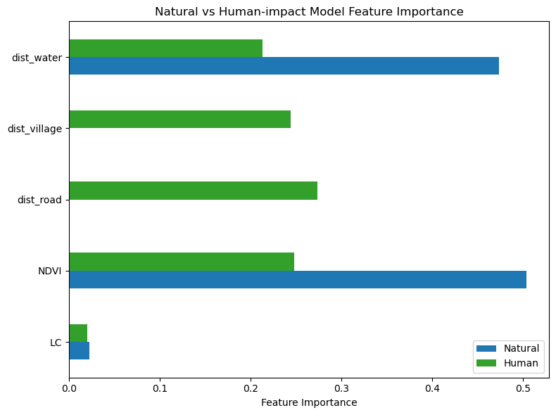

Model results show that NDVI and land cover are the strongest drivers of suitability, with elephants clearly tied to forest quality. In the human-impact model, distance to village becomes similarly important, indicating how settlement edges shape elephant movement, while water and roads add smaller but meaningful contributions.
Code
# Natural model importanceimp_nat = pd.Series(rf_nat.feature_importances_, index=features_natural)# Human-impact model importanceimp_hum = pd.Series(rf_hum.feature_importances_, index=features_human)df_compare = pd.DataFrame({"Natural": imp_nat,"Human": imp_hum}).fillna(0)df_compare.plot(kind="barh", figsize=(8,6), color=["#1f78b4", "#33a02c"])plt.xlabel("Feature Importance")plt.title("Natural vs Human-impact Model Feature Importance")plt.tight_layout()plt.show()

Natural vs Human-impact Model Feature Importance
ROC curves
Both models perform well, but the human-impact model achieves a higher AUC, showing that human landscape features improve prediction. Its steeper ROC curve indicates a stronger ability to distinguish suitable from unsuitable areas, especially around agricultural and village boundaries.
The natural-only model highlights large, continuous forest interiors as the strongest habitat for elephants, representing the landscape that would exist if ecological factors alone shaped movement. This smooth pattern shows broad areas of intact forest functioning as cohesive habitat.
When human-impact variables are added, the suitability surface becomes sharply fragmented. The prediction clearly shows how roads and settlements break up previously continuous habitat, leaving visible linear barriers across the landscape. At the same time, certain areas show increased suitability in the human-impact model. This occurs partly because cropland—especially cornfields—attracts elephants, and partly because human disturbance compresses elephants into narrower corridors. This compression elevates predicted occurrence probabilities and increases the contrast between high- and low-suitability zones.
The difference map reinforces this pattern. Human activity has the strongest negative impact in the northern and southern forest belts, where suitability drops substantially once roads, villages, and agricultural edges are accounted for. Most of these areas appear red, indicating habitat that would be highly suitable under natural conditions but is now degraded by fragmentation. Only limited blue patches remain, corresponding to agricultural edges where suitability rises due to food availability and forced movement. Overall, the maps illustrate how human land use simultaneously reduces the extent of natural habitat and intensifies elephant presence in a few high-risk interface zones.
Code
base =r"data/"nat_path = base +"suitability_natural.tif"hum_path = base +"suitability_human.tif"diff_path = base +"difference_map.tif"with rasterio.open(nat_path) as src: suit_nat = src.read(1)with rasterio.open(hum_path) as src: suit_hum = src.read(1)with rasterio.open(diff_path) as src: diff = src.read(1)# Suitability Maps of both modelsvmin_suit, vmax_suit =0, 0.25fig, axs = plt.subplots(1, 3, figsize=(20, 7))# 1. Natural suitabilityim1 = axs[0].imshow(suit_nat, vmin=0, vmax=0.25, cmap="viridis")axs[0].set_title("Natural Habitat Suitability", fontsize=13)axs[0].axis("off")cbar1 = plt.colorbar(im1, ax=axs[0], shrink=0.8)cbar1.set_label("Suitability", fontsize=10)# 2. Human-impact suitabilityim2 = axs[1].imshow(suit_hum, vmin=0, vmax=0.25, cmap="viridis")axs[1].set_title("Human-impact Habitat Suitability", fontsize=13)axs[1].axis("off")cbar2 = plt.colorbar(im2, ax=axs[1], shrink=0.8)cbar2.set_label("Suitability", fontsize=10)# 3. Difference mapth =0.02diff_masked = diff.copy()diff_masked[np.abs(diff) < th] =0colors = [ (0.3, 0.6, 1.0), # blue (human > natural) (1.0, 1.0, 1.0), # white (no significant difference) (1.0, 0.3, 0.3) # red (natural > human)]cmap_custom = mcolors.LinearSegmentedColormap.from_list("custom", colors)im3 = axs[2].imshow(diff_masked, cmap=cmap_custom, vmin=-0.3, vmax=0.3)axs[2].set_title("Difference (Natural – Human)", fontsize=13)axs[2].axis("off")cbar3 = plt.colorbar(im3, ax=axs[2], shrink=0.8)cbar3.set_label("Δ Suitability", fontsize=10)plt.tight_layout()plt.show()